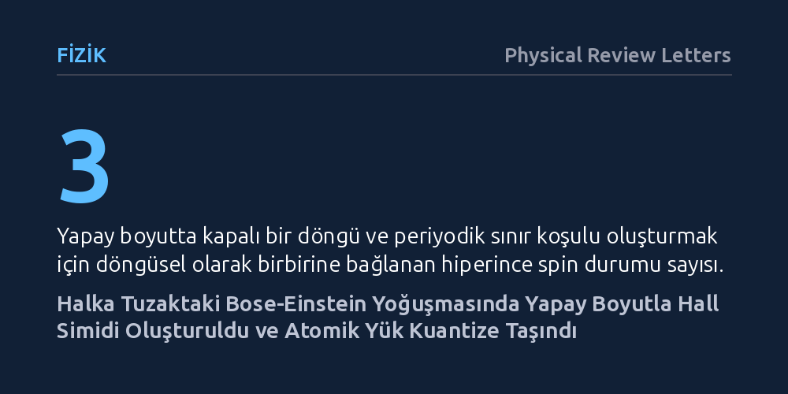

FIZIK · Physical Review Letters · 2026-10-21
Araştırmacılar, halka biçimli bir tuzakta tuttukları Bose-Einstein yoğuşmasında yapay bir Hall simidi geometrisi ve topolojik yük pompası oluşturmayı hedefledi. İç spin durumlarını bağlayarak elde ettikleri yapay manyetik akı sayesinde atomların azimut yönünde kuantize şekilde taşındığını gösterdiler.
Katı maddelerde incelenmesi imkânsız olan eğri uzaylardaki kuantum Hall fiziğinin, laboratuvarda soğuk atomlar ve yapay boyutlar kullanılarak hassas biçimde simüle edilebileceğini gösterir.

Kuantum Hall etkisi, manyetik alan altındaki iki boyutlu elektron sistemlerinde iletkenliğin temel fiziksel sabitlerle tam katlar halinde kuantize olması durumudur. Katı hal fiziğinde topolojik fazların anlaşılmasını sağlayan bu olgu, kural olarak düzlemsel kristal tabakalarda gözlemlenir. Ancak teorik fizik, uzayın simit (torus) gibi kapalı ve eğri bir geometriye büründüğü durumlarda sınır etkilerinden arınmış çok daha zengin topolojik fazların ve kuantize hallerin ortaya çıkacağını uzun süredir öngörmektedir.
Gerçek bir katı kristali bükerek kusursuz bir simit yüzeyine dönüştürmek ve bu yüzeyden kararlı bir manyetik akı geçirmek fiziksel olarak neredeyse imkânsızdır. Bu durum, eğri geometrilerdeki kuantum Hall fiziğinin deneysel olarak araştırılmasını yıllarca engellemiştir. Temel soru, aşırı soğutulmuş atomik gazlar ve yapay boyutlar kullanılarak laboratuvar ortamında yapay bir Hall simidinin kurulup kurulamayacağı ve buradaki kuantize parçacık hareketinin doğrudan gözlemlenip gözlemlenemeyeceğidir.
Araştırmacılar bu engeli aşmak için mutlak sıfıra yakın sıcaklıklara kadar soğutulmuş bir spinör Bose-Einstein yoğuşması kullandı. Yoğuşma ilk olarak gerçek uzayda halka biçimli bir optik tuzak içine hapsedilerek simidin ilk dairesel ekseni oluşturuldu. Sistemin simit haline gelebilmesi için gereken ikinci döngüsel boyut ise parçacıkların fiziksel konumları yerine içsel kuantum durumları üzerinden kurgulandı.
Atomların sahip olduğu üç farklı hiperince spin durumu, Raman lazerleri ve mikrodalga alanları vasıtasıyla döngüsel olarak birbirine bağlandı. Birinci durum ikinciye, ikinci durum üçüncüye ve üçüncü durum tekrar birinciye kenetlenerek yapay bir boyutta periyodik sınır koşulu yaratıldı. Gerçek uzaydaki dairesel halka tuzak ile iç durumlardan kurulan bu dairesel yapay boyut birleştiğinde, yüzeyini yapay bir manyetik akının delip geçtiği iki boyutlu bir Hall simidi elde edildi.
Oluşturulan sistemin davranışı ve atomik dağılımlar, parçacıkların konumunu doğrudan tespit etmeyi sağlayan yerinde görüntüleme (in situ) tekniğiyle kaydedildi. Araştırmacılar ardından simidin ekseninden geçen akıyı kuantum dengesini bozmayacak şekilde son derece yavaş biçimde değiştirerek atomların tepkisini inceledi.
Elde edilen görüntüler, yapay manyetik akının halka tuzak boyunca azimut yönünde periyodik yoğunluk dalgalanmaları yarattığını gösterdi. Bu yoğunluk modülasyonlarının periyodunun, yüzeyden geçen kuantize manyetik akı miktarı tarafından belirlendiği tespit edildi. Teoriye göre Hall simidinin en temel ayırt edici imzası sayılan bu dalgalanmalar, simit geometrisinin başarıyla kurulduğunu kanıtladı.
Ardından simidin eksenel akısı yavaşça (adyabatik olarak) değiştirilerek bir topolojik yük pompası çalıştırıldı. Bu süreçte atomların halka boyunca rastgele dağılmak yerine, tam olarak kuantize adımlarla azimut doğrultusunda taşındığı saptandı. Böylece eğri bir simit uzayında topolojik yük iletimi, gerçek uzayda atomların toplu hareketi olarak ilk kez gözlemlenmiş oldu.
Araştırma ekibi son olarak iç durumlar arasındaki döngüsel bağı kademeli olarak açıp kapayarak sistemin silindirden simit topolojisine geçişini araştırdı. Periyodik bağ koparıldığında yoğunluk dalgalanmalarının silindiği, döngü tamamlandığında ise simit modülasyonlarının yeniden ortaya çıktığı belirlendi.
Bu çalışma, katı hal malzemelerinin yapısal kusurları ve kenar kısıtlamaları nedeniyle doğrudan incelenemeyen kapalı ve eğri uzaylardaki kuantum Hall fiziğinin laboratuvarda canlandırılabileceğini ortaya koymaktadır. Deney, karmaşık kuramsal modellerin son derece temiz ve kontrol edilebilir atomik ortamlarda sınanabileceğini doğrulamaktadır.
Geliştirilen yöntem; fraksiyonel kuantum Hall etkileri, topolojik yük pompaları ve yüksek boyutlu manifoldların geometrisi gibi soyut fiziksel süreçleri ultra soğuk atom platformlarında incelemek için esnek bir zemin sunmaktadır. Bu yaklaşım, doğada kendiliğinden bulunmayan eğri uzay geometrilerinin yapay kuantum sistemleriyle laboratuvarda inşa edilmesinin yolunu açmaktadır.